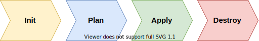
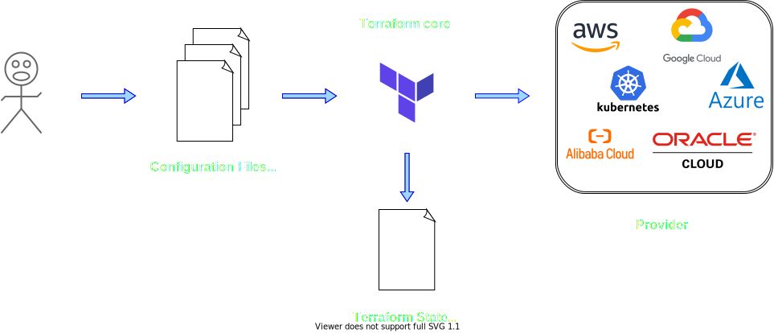

Terraform - Lessons Learned
By Robin Schwendele
Github
About Myself
- Robin Schwendele
- Working student since 10/2020
- Bachelor Computer Science Mannheim
- Student of Master Software-Engineering Mannheim
A practical IoT cloud journey
Terraform
- By HashiCorp
- Provisioning Tool
- Infrastructure as Code
- Declarative
- Plugin-based architecture model
- HCL (Hashicorp Configuration Language)
- Written in Golang
- Open Source
Commands
Workflow
1. Demo - Terraform Basics
What we will see
- Example Terraform File (.tf)
- Syntax Basics
- Terraform Execution
- Resource in the Cloud
1. Demo - Terraform Basics
provider "azurerm" {
features {}
}
variable "name" {}
resource "azurerm_resource_group" "example" {
name = var.name
location = "westeurope"
}
resource "azurerm_public_ip" "example" {
name = "${var.name}-ip"
resource_group_name = azurerm_resource_group.example.name
location = azurerm_resource_group.example.location
allocation_method = "Static"
}
1. Demo - Terraform Basics
1. Demo - Terraform Basics
What we saw
- Terraform File
- State File
- Terraform Workflow via command line
- Resources in the Cloud
2. Demo - Digital Twin
Practical IoT-Cloud-Joruney
2. Demo - Digital Twin
- After terraform apply via Azure CLI
- IoT Hub: my-hub
$ az iot hub device-identity create --hub-name 'my-hub' --device-id 'my-device'
2. Demo - Digital Twin
- Local execution Provisioner via Terraform
- Interpreter must be installed
- az login must be executed before terraform apply
resource "null_resource" "device_twin" {
provisioner "local-exec" {
when = create
interpreter = ["pwsh" , "-Command"]
command = az iot hub device-identity create -n 'my-hub' -d 'my-device'
}
}
2. Demo - Digital Twin
Same thing for destroy
resource "null_resource" "device_twin" {
provisioner "local-exec" {
when = destroy
interpreter = ["pwsh" , "-Command"]
command = az iot hub device-identity delete -n 'my-hub' -d 'my-device'
}
}
2. Demo - Digital Twin
And together
resource "null_resource" "device_twin" {
provisioner "local-exec" {
when = create
interpreter = ["pwsh" , "-Command"]
command = az iot hub device-identity create -n 'my-hub' -d 'my-device'
}
provisioner "local-exec" {
when = destroy
interpreter = ["pwsh" , "-Command"]
command = az iot hub device-identity delete -n 'my-hub' -d 'my-device'
}
}
2. Demo - Digital Twin
Problem: Destroy time provisioner cannot access variables
variable "device_name" {}
resource "null_resource" "device_twin" {
provisioner "local-exec" {
when = create
interpreter = ["pwsh" , "-Command"]
command = az iot hub device-identity create -n 'my-hub' -d '${var.device_name}'
}
provisioner "local-exec" {
when = destroy
interpreter = ["pwsh" , "-Command"]
command = az iot hub device-identity delete -n 'my-hub' -d '${var.device_name}'
}
}
2. Demo - Digital Twin
Solution: Triggers can retain data you need at destroy time
variable "device_name" {}
resource "null_resource" "device_twin" {
triggers = { device_name = var.device_name }
provisioner "local-exec" {
when = create
interpreter = ["pwsh" , "-Command"]
command = az iot hub device-identity create -n 'my-hub' -d self.triggers.name
}
provisioner "local-exec" {
when = destroy
interpreter = ["pwsh" , "-Command"]
command = az iot hub device-identity delete -n 'my-hub' -d self.triggers.name
}
}
2. Demo - Digital Twin
variable "device_name" {}
resource "null_resource" "device_twin" {
triggers = {
hub_name = azurerm.iothub.my_hub
device_name = var.name
}
provisioner "local-exec" {
...
command = az iot hub device-identity create -n self.triggers.hub -d self.triggers.name
}
provisioner "local-exec" {
...
command = az iot hub device-identity delete -n self.triggers.hub -d self.triggers.name
}
}
2. Demo - Digital Twin
Script with error handling/retires
Modules
- Container to group multiple resources
-
- Input variables
- Output values
- Resources to define infrastructure objects
- Placed in its own directory